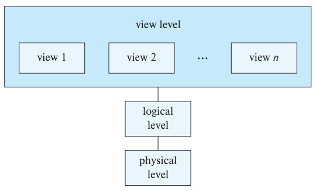
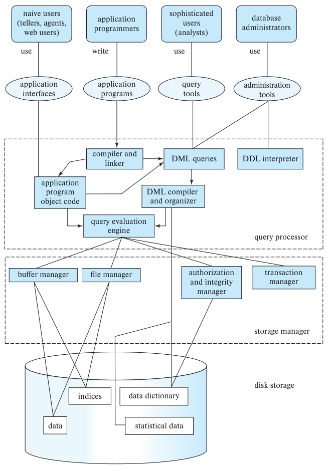
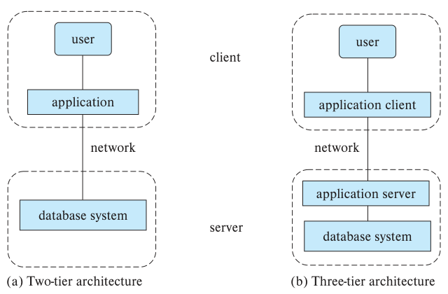

第1章 引言
数据库管理系统（database-management system，DBMS）由一组相互关联的数据和一组访问这些数据的程序组成。这组数据通常称为数据库，其中包含与某个组织有关的信息。DBMS 的首要目标，是提供一种方便、高效地存储和检索数据库信息的方法。
数据库系统用于管理大量信息。数据管理既包括定义信息的存储结构，也包括提供操作信息的机制。此外，即使发生系统崩溃或未经授权的访问企图，数据库系统也必须确保所存信息的安全。如果多个用户共享数据，系统还必须避免可能出现的异常结果。
信息对大多数组织都十分重要，计算机科学家为此发展了大量管理数据的概念和技术。本书主要讨论这些概念和技术。本章简要介绍数据库系统的原理。
1.1 数据库系统的应用
最早的数据库系统诞生于20世纪60年代，用于满足计算机管理商业数据的需求。与现代数据库应用相比，早期应用相对简单。现代应用已经覆盖业务复杂、遍布全球的企业。
无论新旧，所有数据库应用都有一些重要的共同点。这些应用围绕数据本身展开，执行某种计算的程序并非主要对象。如今，一些价值最高的公司，其价值来源于拥有的信息，实体资产并非主要来源。设想一家银行失去了账户和客户数据，或一个社交网站丢失了用户之间的联系。在这种情况下，这些公司的价值几乎会全部丧失。
数据库系统所管理的数据集合具有以下特点：
- 价值高；
- 规模相对较大；
- 由多个用户和应用程序访问，而且经常是同时访问。
最初的数据库应用只有简单、格式严格的结构化数据。如今，数据库应用中的数据可能具有复杂的联系，结构也更加多变。以结构化数据的应用为例，一所大学会保存课程、学生和选课记录。对于每门课程，学校保存相同类型的信息：课程标识符、名称、系名、课程编号等；学生信息也类似，包括学生标识符、姓名、地址、电话等。选课记录是一组二元组，每个二元组由一个课程标识符和一个学生标识符构成。这类信息具有标准、重复的结构，是20世纪60年代以来典型的数据库应用。再将这种简单的大学数据库应用与社交网站比较。网站用户发布的个人信息类型各异，既有姓名、出生日期等简单项目，也有由文字、图像、视频及其他用户链接组成的复杂帖子。这些数据只有少量共同结构。不过，这两种应用都具有数据库的基本特征。
现代数据库系统利用数据结构的共性提高效率，同时允许数据只有较弱的结构，或者格式高度多变。数据库系统因而是一个庞大、复杂的软件系统，负责管理庞大、复杂的数据集合。
管理复杂性在任何领域都是难题，数据管理也一样。抽象是管理复杂性的一个重要概念。借助抽象，人们可以使用复杂设备或系统，而无须了解其构造细节。例如，一个人只要知道如何操作汽车的控制装置，就可以驾驶汽车，无须了解发动机的制造方法或工作原理，只需知道发动机作用的抽象描述。同样，面对庞大、复杂的数据集合，数据库系统提供一个更简单的信息抽象视图，使用户和应用程序员无须了解底层数据的存储与组织细节。数据库系统提供高层次抽象，使组织可以把各种类型的数据整合到统一的信息库中，支撑自身运作。
下面列举一些代表性应用：
- 企业信息
- 销售：保存客户、产品和购买信息。
- 会计：保存付款、收款、账户余额、资产及其他会计信息。
- 人力资源：保存员工、薪资、工资税和福利信息，并生成工资支票。
- 制造业：管理供应链，跟踪工厂产品生产、仓库和商店库存，以及产品订单。
- 银行与金融
- 银行：保存客户信息、账户、贷款和银行交易。
- 信用卡交易：记录信用卡消费并生成月度账单。
- 金融：保存股票、债券等金融工具的持有、卖出和买入信息；还保存实时市场数据，支持客户在线交易和公司的自动交易。
- 大学：保存学生信息、选课和成绩，以及人力资源、会计等常规组织信息。
- 航空公司：保存订票和航班时刻信息。航空公司是最早采用地理分布式数据库的组织之一。
- 电信：记录通话、短信和数据用量，生成月度账单，维护预付费电话卡余额，并保存通信网络信息。
- 基于 Web 的服务
- 社交媒体：保存用户、用户间的联系（如好友或关注信息）、用户发布的帖子，以及帖子的评分或点赞信息等。
- 在线零售：与其他零售商一样，记录销售数据和订单；此外，还跟踪用户查看过的产品、搜索词等，以确定最适合向该用户推荐的商品。
- 在线广告：保存点击历史，以便有针对性地提供广告、产品推荐、新闻文章等。每当人们进行 Web 搜索、网上购物或访问社交网站时，都会访问这类数据库。
- 文档数据库：维护新闻文章、专利、已发表研究论文等文档集合。
- 导航系统：保存各种兴趣地点的位置，以及道路、铁路、公交等线路的精确路线。
上述例子表明，数据库既是各类组织不可缺少的组成部分，也参与个人日常生活中的大量活动。
人们与数据库交互的方式一直在变化。早期数据库作为后台系统运行，用户通过打印的报表获取结果，通过纸质表单输入数据。随着数据库系统日益完善，程序员有了更好的语言与数据交互，组织内部的最终用户也可以通过用户界面查询和更新数据。
数据库为程序员提供的交互支持不断改善，计算机硬件性能提高而成本下降，促成了更复杂的应用。这些应用让组织内部的最终用户和社会公众都能更直接地接触数据库中的数据。过去，银行客户每笔业务都必须通过柜员办理；自动取款机（ATM）出现后，客户可以直接与系统交互。如今，几乎所有组织都通过 Web 应用或移动应用，让客户直接与组织的数据库交互，从而直接与组织本身交互。
用户或客户可以专注于产品或服务，无须了解支撑交互的大型数据库的细节。例如，阅读社交媒体帖子，或访问在线书店浏览图书、音乐时，访问的就是数据库中存储的数据。在线提交订单时，订单会存入数据库。访问银行网站查询余额和交易信息时，这些信息从银行数据库系统中检索出来。访问网站时，网站可能会从数据库获取有关用户的信息，以选择展示哪些广告。几乎每次与智能手机交互，都会涉及某种数据库访问。此外，Web 访问活动的数据也可能存入数据库。
尽管用户界面隐藏了数据库访问的细节，大多数人甚至没有意识到自己正在使用数据库，但访问数据库已经成为当今几乎所有人生活中不可缺少的一部分。
概括来说，数据库有两种使用方式。
- 第一种是支持联机事务处理：大量用户使用数据库，每个用户检索相对少量的数据，并执行小规模更新。对于前面列举的大多数数据库应用用户，这是主要使用方式。
- 第二种是支持数据分析，即处理数据以得出结论，推导规则或决策过程，再用这些结果指导业务决策。
例如，银行需要决定是否向贷款申请人放贷，在线广告商需要决定向特定用户展示哪条广告。这些任务通过两个步骤完成。首先，数据分析技术尝试自动发现数据中的规则与模式，并建立预测模型。这些模型以个体的属性（“特征”）为输入，输出预测结果，例如还贷概率或点击广告的概率，再据此作出业务决策。
再如，制造商和零售商需要决定生产或订购哪些商品，以及数量多少。这些决策在很大程度上依赖分析历史数据、预测趋势的技术。错误决策的代价可能很高，组织因而愿意投入大量资金收集或购买所需数据，并构建能利用数据作出准确预测的系统。
数据挖掘将人工智能研究者和统计分析人员提出的知识发现技术，与高效的实现技术相结合，使这些技术能够用于规模极大的数据库。
1.2 数据库系统的目的
为了理解数据库系统的目的，考虑大学组织中的一部分业务：除其他数据外，它还保存所有教师、学生、系以及开设课程的信息。在计算机中保存这些信息的一种方法，是将其存入操作系统文件。为让用户操作信息，系统提供若干操作文件的应用程序，包括：
- 添加新的学生、教师和课程。
- 为学生选课，并生成班级名单。
- 登记学生成绩、计算平均绩点（GPA），并生成成绩单。
程序员开发这些应用程序，以满足学校的需要。
随着需求出现，系统会不断加入新的应用程序。例如，假设学校决定设立一个新专业。学校为此建立新系，并创建新的永久文件（或向已有文件补充信息），记录该系的所有教师、该专业学生、开设的课程、学位要求等信息。学校可能需要编写新的应用程序，处理新专业特有的规则；学校新增的其他规则也可能需要新程序处理。久而久之，系统中的文件和应用程序越来越多。
这种典型的文件处理系统由常规操作系统支持。系统将永久记录保存在不同文件中，需要不同的应用程序，从相应文件中提取记录，或向文件中添加记录。
使用文件处理系统保存组织信息，存在以下主要缺点：
- 数据冗余与不一致。 文件和应用程序由不同程序员在很长一段时间内陆续创建，各个文件的结构可能不同，程序也可能使用多种编程语言编写。此外，同一信息可能在多个位置（文件）重复保存。例如，一名学生同时修读音乐和数学两个专业，他的地址和电话号码可能既出现在音乐系学生记录文件中，也出现在数学系学生记录文件中。这种冗余增加了存储和访问成本，还可能造成数据不一致，即同一数据的多个副本不再相同。例如，学生更改地址后，音乐系记录已更新，系统中其他位置的记录却没有更新。
- 数据访问困难。 假设学校一名工作人员需要找出居住在某个邮政编码区域内的所有学生姓名。他请数据处理部门生成名单。由于原系统的设计者没有预料到这种需求，现成的应用程序无法满足要求。不过，系统中有一个生成全体学生名单的程序。现在工作人员有两个选择：取得全体学生名单后手工筛选，或者请程序员编写所需的应用程序。显然，两种办法都不理想。假设程序已经编写完毕，几天后，同一位工作人员又需要缩小名单范围，只保留至少修满60个学分的学生。可以预见，系统中没有生成这种名单的程序。他又面临上述两个选择，两者都不能令人满意。
传统文件处理环境无法方便、高效地检索所需数据。通用的数据检索系统需要更灵活地响应需求。
- 数据孤立（data isolation）。 数据散布在不同文件中，而文件格式可能各异，因此很难编写新的应用程序来检索合适的数据。
- 完整性问题。 数据库中的数据值必须满足某些一致性约束。假设学校为每个系维护一个账户，记录账户余额，并规定系的账户余额不得低于零。开发人员通过向各个应用程序添加相应代码来实施这些约束。但新增约束时，很难修改程序以落实约束。如果约束涉及不同文件中的多个数据项，问题会更加复杂。
- 原子性问题。 计算机系统和其他设备一样，都可能发生故障。对许多应用而言，发生故障后必须把数据恢复到故障前的一致状态。考虑银行系统中一个将500美元从账户 A 转到账户 B 的程序。如果程序执行过程中系统发生故障，账户 A 可能已经扣除500美元，账户 B 却还没有收到这笔钱，数据库便处于不一致状态。要保持数据库一致性，借记和贷记必须同时发生，或者都不发生。也就是说，转账必须具有原子性：要么完整执行，要么完全不执行。传统文件处理系统很难保证原子性。
- 并发访问异常。 为提高系统整体性能并缩短响应时间，许多系统允许多个用户同时更新数据。如今，最大的在线零售商每天可能接收购物者数百万次数据访问。在这样的环境中，并发更新可能相互干扰，导致数据不一致。假设账户 A 的余额为10,000美元，两名银行柜员几乎同时从该账户分别扣除500美元和100美元，并发执行可能使账户余额进入错误或不一致状态。假定每个取款程序都先读取旧余额，减去取款金额，再写回结果。如果两个程序并发运行，它们可能都读到10,000美元，随后分别写回9,500美元和9,900美元。最终账户余额取决于谁最后写入，可能为9,500美元或9,900美元，正确余额则应为9,400美元。系统必须提供某种控制机制，避免这种情况。但许多事先未协调的应用程序都可能访问数据，因此很难实现这种控制。
再举一个例子。选课程序通过维护一门课程的已选学生人数，限制选课人数。学生选课时，程序读取当前人数，检查是否尚未达到上限，将人数加一，再写回数据库。假设当前人数为39，两名学生同时选课。两次程序执行都可能读到39，再都写回40，导致人数只增加1。实际上，两名学生都成功选课，人数应为41。进一步假设选课上限是40人，那么在上述情况下，两名学生都能选课，超过40人的限制。
- 安全性问题。 数据库系统中的用户不应都能访问全部数据。例如，大学的薪资工作人员只需要查看数据库中的财务信息，无须访问学业记录。然而，文件处理系统中的应用程序是按临时需要逐个添加的，很难实施这种安全约束。
这些问题及其他困难，推动了20世纪60年代和70年代数据库系统的早期发展，也推动了基于文件的应用向数据库系统迁移。
接下来，我们将介绍数据库系统用于解决文件处理系统问题的概念和算法。本书大部分内容都以大学组织作为贯穿始终的典型数据处理应用示例。
1.3 数据视图
数据库系统由一组相互关联的数据，以及一组允许用户访问和修改这些数据的程序组成。数据库系统的一个主要目的，是向用户提供数据的抽象视图，即隐藏数据存储和维护的某些细节。
1.3.1 数据模型
数据库结构的基础是数据模型，即一组用于描述数据、数据之间的联系、数据语义和一致性约束的概念工具。
本书将介绍多种数据模型，可以分为以下四类：
- 关系模型。 关系模型用一组表表示数据及数据之间的联系。每张表有多个列，每列具有唯一的名称。表也称为关系。关系模型是一种基于记录的模型：数据库由若干类型、格式固定的记录构成。每张表包含特定类型的记录，每种记录类型定义固定数量的字段或属性，表的列对应记录类型的属性。关系数据模型是应用最广泛的数据模型，目前绝大多数数据库系统都基于关系模型。第2章和第7章将详细介绍关系模型。
- 实体—联系模型。 实体—联系（entity-relationship，E-R）数据模型使用一组称为实体的基本对象，以及这些对象之间的联系。实体是现实世界中可以与其他对象区分开的“事物”或“对象”。实体—联系模型广泛用于数据库设计，第6章将详细介绍。
- 半结构化数据模型。 半结构化数据模型允许同一类型的各个数据项具有不同的属性集合。前述数据模型则要求特定类型的每个数据项都具有相同的属性集合。JSON 和可扩展标记语言（XML）是广泛使用的半结构化数据表示形式。第8章将详细讨论半结构化数据模型。
- 基于对象的数据模型。 面向对象编程，特别是 Java、C++ 和 C# 编程，已经成为主流软件开发方法。最初，这促成了独立的面向对象数据模型；如今，对象概念已经很好地融入关系数据库。已有标准规定如何将对象存入关系表。数据库系统允许在系统中保存过程，并由数据库系统执行这些过程。这可以视为在关系模型中增加封装、方法和对象标识的概念。第8章将概述基于对象的数据模型。
关系模型是大多数数据库应用的基础，因此本书大量篇幅围绕关系模型展开。
1.3.2 关系数据模型
在关系模型中，数据以表的形式表示。每张表有多个列，每列具有唯一的名称。表中的每一行表示一条信息。图1.1展示了一个由两张表组成的关系数据库示例：一张表列出大学教师的详细信息，另一张表列出各个系的详细信息。
第一张表 instructor 中，例如，姓名为 Einstein、ID 为 22222 的教师属于 Physics 系，年薪为95,000美元。第二张表 department 中，例如，Biology 系位于 Watson 楼，预算为90,000美元。现实中的大学当然会有更多系和教师。本书使用小表阐释概念，同一模式下更大规模的示例可以在线获取。
图1.1 一个关系数据库示例。
（a）教师表 instructor。ID 为教师编号，name 为姓名，dept_name 为系名，salary 为薪资。
| ID | name | dept_name | salary |
|---|---|---|---|
| 22222 | Einstein | Physics | 95000 |
| 12121 | Wu | Finance | 90000 |
| 32343 | El Said | History | 60000 |
| 45565 | Katz | Comp. Sci. | 75000 |
| 98345 | Kim | Elec. Eng. | 80000 |
| 76766 | Crick | Biology | 72000 |
| 10101 | Srinivasan | Comp. Sci. | 65000 |
| 58583 | Califieri | History | 62000 |
| 83821 | Brandt | Comp. Sci. | 92000 |
| 15151 | Mozart | Music | 40000 |
| 33456 | Gold | Physics | 87000 |
| 76543 | Singh | Finance | 80000 |
（b）系表 department。dept_name 为系名，building 为所在楼宇，budget 为预算。
| dept_name | building | budget |
|---|---|---|
| Comp. Sci. | Taylor | 100000 |
| Biology | Watson | 90000 |
| Elec. Eng. | Taylor | 85000 |
| Music | Packard | 80000 |
| Finance | Painter | 120000 |
| History | Painter | 50000 |
| Physics | Watson | 70000 |
1.3.3 数据抽象
系统要能够实用，就必须高效地检索数据。效率要求促使数据库系统开发者使用复杂的数据结构表示数据库中的数据。许多数据库用户没有接受过计算机专业训练，开发者便通过多个数据抽象层次隐藏复杂性，简化用户与系统的交互：
- 物理层。 最低层次的抽象描述数据实际上如何存储，详细描述复杂的底层数据结构。
- 逻辑层。 高一层的抽象描述数据库存储了什么数据，以及数据之间存在什么联系。逻辑层用少量相对简单的结构描述整个数据库。虽然这些简单结构的实现可能涉及复杂的物理层结构，逻辑层的用户无须了解这种复杂性。这称为物理数据独立性。需要决定数据库应保存哪些信息的数据库管理员，使用的就是逻辑层抽象。
- 视图层。 最高层次的抽象仅描述整个数据库的一部分。虽然逻辑层采用较简单的结构，但大型数据库中存储的信息种类很多，仍然存在复杂性。许多用户只需要访问数据库的一部分，无须全部信息。视图层抽象用于简化这些用户与系统的交互。同一个数据库可以提供多个视图。
图1.2展示了这三个抽象层次之间的关系。

图1.2 数据抽象的三个层次。physical level 为物理层，logical level 为逻辑层，view level 为视图层；view 1、view 2、…、view n 表示视图1、视图2、…、视图n。
关系模型等数据模型的一个重要特征，是向数据库用户和数据库应用开发者隐藏底层实现细节。数据库系统让应用开发者利用数据模型提供的抽象存储和检索数据，并将抽象操作转换为底层实现上的操作。
可以借助编程语言中的数据类型概念，理解不同抽象层次的区别。许多高级编程语言支持结构化类型的概念。我们可以抽象地描述一种记录类型，如下所示。¹
type instructor = record
ID : char (5);
name : char (20);
dept_name : char (20);
salary : numeric (8,2);
end;
这段代码定义了一种名为 instructor 的新记录类型，包含四个字段。每个字段都有名称及相应类型。例如，char(20) 表示包含20个字符的字符串，numeric(8,2) 表示总共8位数字、其中小数点后有2位的数值。大学还可能使用其他记录类型，例如：
department，字段为dept_name、building和budget。course，字段为course_id、title、dept_name和credits。student，字段为ID、name、dept_name和tot_cred。
¹ 实际的类型声明取决于所用语言。C 和 C++ 使用 struct 声明。Java 没有这样的声明，但定义一个简单类可以达到相同效果。
在物理层，instructor、department 或 student 记录可以描述为一段连续字节。编译器向程序员隐藏这些细节。同样，数据库系统向数据库程序员隐藏许多最底层的存储细节。不过，数据库管理员可能了解数据物理组织的某些细节。例如，将表存入文件有许多方法。一种方法是把表存成文件中的记录序列，用特殊字符（如逗号）分隔记录的不同属性，再用另一个特殊字符（如换行符）分隔记录。如果所有属性长度固定，可以另行保存属性长度，并省去文件中的分隔符。对于变长属性，可以先保存长度，再保存数据。数据库使用称为索引的数据结构支持高效记录检索；索引也属于物理层。
在逻辑层，每种记录都由类型定义描述，如前面的代码所示。这些记录类型之间的联系也在逻辑层定义。例如，可以要求 instructor 记录的 dept_name 值必须出现在 department 表中。使用编程语言的程序员在这一抽象层次上工作，数据库管理员通常也在这一层次上工作。
在视图层，计算机用户看到的是一组隐藏数据类型细节的应用程序。系统在视图层定义多个数据库视图，数据库用户可以看到其中一部分或全部。视图除隐藏数据库逻辑层细节外，还提供安全机制，阻止用户访问数据库的某些部分。例如，大学教务处工作人员只能看到数据库中有关学生的信息，不能访问教师薪资信息。
1.3.4 实例与模式
随着信息插入和删除，数据库会不断变化。某一时刻数据库中存储的信息集合称为数据库的实例；数据库的整体设计称为数据库的模式。可以类比用编程语言编写的程序来理解这两个概念。数据库模式对应程序中的变量声明及相关类型定义。每个变量在某一时刻都有特定值，程序中各变量在某个时刻的值，就对应数据库模式的一个实例。
数据库系统按抽象层次划分为多个模式。物理模式描述物理层的数据库设计，逻辑模式描述逻辑层的数据库设计。数据库在视图层还可能具有多个模式，有时称为子模式，用于描述不同的数据库视图。
从对应用程序的影响来看，逻辑模式最为重要，因为程序员依据逻辑模式构建应用。物理模式隐藏在逻辑模式之下，通常容易修改，不会影响应用程序。如果应用程序不依赖物理模式，因而在物理模式变化后无须重写，就称其具有物理数据独立性。
模式也可能设计得有问题，例如包含不必要的重复信息。假设把系的预算作为 instructor 记录的一个属性，那么每当某个系（如 Physics 系）的预算变化，都必须修改属于该系的全部教师记录。第7章将讨论如何区分好的模式设计与不好的模式设计。
传统上，逻辑模式很少修改，甚至完全不改。但许多较新的数据库应用需要更灵活的逻辑模式，例如允许同一关系中的不同记录具有不同的属性。
1.4 数据库语言
数据库系统提供数据定义语言（data-definition language，DDL）来指定数据库模式，并提供数据操纵语言（data-manipulation language，DML）来表达数据库查询和更新。实践中，DDL 与 DML 通常是同一种数据库语言（如 SQL）的不同组成部分，并非两种独立语言。几乎所有关系数据库系统都使用 SQL，第3、4、5章将详细介绍。
1.4.1 数据定义语言
我们使用一种称为数据定义语言（DDL）的专门语言，通过一组定义指定数据库模式。DDL 还用于指定数据的其他性质。
数据库系统使用的存储结构和访问方法，由一种特殊 DDL 中的一组语句指定，这种语言称为数据存储与定义语言。这些语句定义数据库模式的实现细节，通常对用户隐藏。
数据库中存储的数据值必须满足某些一致性约束。例如，假设学校规定系的账户余额不得为负数。DDL 提供指定这类约束的功能，每次数据库更新时，系统都会检查这些约束。一般而言，约束可以是关于数据库的任意谓词，但检查任意谓词的代价可能很高。因此，数据库系统只实现能够以较小开销检查的完整性约束：
- 域约束。 每个属性都必须关联一个可能取值的域，如整数类型、字符类型、日期/时间类型。将属性声明为某个域，就约束了该属性可以采用的值。域约束是最基本的完整性约束，每当新数据项输入数据库，系统都可以很容易地检查它。
- 参照完整性。 有时，我们需要保证某个关系中给定属性组的值，也出现在另一个关系的某组属性中，这就是参照完整性。例如，每门课程所属的系必须是学校实际存在的系。更准确地说，
course记录中的dept_name值必须出现在department关系某条记录的dept_name属性中。数据库修改可能违反参照完整性。通常的处理办法是拒绝导致违约的操作。 - 授权。 对于数据库中的各种数据值，我们可能希望区分不同用户获准的访问类型。这种区别通过授权表达。常见类型包括：读授权，允许读取数据，但不允许修改；插入授权，允许插入新数据，但不允许修改已有数据；更新授权，允许修改数据，但不允许删除；删除授权，允许删除数据。可以向用户授予全部权限、不授予任何权限，或授予其中若干种权限的组合。
与其他编程语言一样，DDL 语句处理后会生成输出。DDL 的输出保存在数据字典中。数据字典包含元数据，即关于数据的数据。数据字典可视为一种特殊的表，只能由数据库系统本身访问和更新，普通用户不能直接操作。数据库系统在读取或修改实际数据之前，会查阅数据字典。
1.4.2 SQL 数据定义语言
SQL 提供功能丰富的 DDL，可以定义表及其数据类型和完整性约束。
例如，下面这条 SQL DDL 语句定义 department 表：
create table department
(dept_name char (20),
building char (15),
budget numeric (12,2));
执行这条 DDL 语句会创建 department 表，其中有 dept_name、building 和 budget 三列，每列关联一种特定数据类型。第3章将详细讨论数据类型。
SQL DDL 还支持多种完整性约束。例如，可以指定 dept_name 属性为主键，以保证任意两个系都没有相同的系名；也可以规定任何 instructor 记录中的 dept_name 值，必须出现在 department 表某条记录的 dept_name 属性中。第3章和第4章将介绍 SQL 对完整性约束与授权的支持。
1.4.3 数据操纵语言
数据操纵语言（DML）让用户能够访问或操作按相应数据模型组织的数据。访问类型包括：
- 检索数据库中存储的信息。
- 向数据库插入新信息。
- 从数据库删除信息。
- 修改数据库中存储的信息。
数据操纵语言基本上分为两类：
- 过程式 DML 要求用户指定需要什么数据，以及如何获取这些数据。
- 声明式 DML，也称为非过程式 DML，只要求用户指定需要什么数据，无须指定获取方式。
声明式 DML 通常比过程式 DML 更容易学习和使用。不过，用户无须指定如何获取数据，也意味着数据库系统必须自行找出高效的数据访问方法。
查询是请求检索信息的语句。DML 中涉及信息检索的部分称为查询语言。严格来说，把查询语言和数据操纵语言当作同义词并不准确，但这种用法很常见。
目前有多种数据库查询语言用于商业系统或实验系统。第3章至第5章将介绍使用最广泛的查询语言 SQL。
1.3节讨论的抽象层次既适用于数据定义和组织，也适用于数据操纵。在物理层，我们必须定义高效访问数据的算法；在更高的抽象层次，我们强调易用性，目标是让人能够高效地与系统交互。数据库系统的查询处理器组件将 DML 查询转换为数据库系统物理层的一系列动作，第15章和第16章将介绍这一组件。第22章将讨论日益常见的并行和分布式环境中的查询处理。
1.4.4 SQL 数据操纵语言
SQL 查询语言是非过程式语言。查询接受若干张表作为输入，也可能只有一张表，但总是返回一张表。下面的 SQL 查询找出 History 系所有教师的姓名：
select instructor.name
from instructor
where instructor.dept_name = 'History';
该查询要求从 instructor 表中取出 dept_name 为 History 的行，并显示这些行的 name 属性。执行结果是一张只有一列的表，列名为 name；表中每行包含一位 dept_name 为 History 的教师姓名。在图1.1的表上执行该查询，会得到两行，一行为 El Said，另一行为 Califieri。
查询可能涉及多张表的信息。例如，下面的查询找出所属系预算超过95,000美元的所有教师，返回其教师 ID 和系名。
select instructor.ID, department.dept_name
from instructor, department
where instructor.dept_name = department.dept_name and
department.budget > 95000;
如果在图1.1的表上执行该查询，系统会发现两个系的预算超过95,000美元，即 Computer Science 和 Finance，这两个系共有五位教师。因此，结果是一张包含两列（ID、dept_name）和五行的表：(12121, Finance)、(45565, Computer Science)、(10101, Computer Science)、(83821, Computer Science) 和 (76543, Finance)。
译注：原文在解释查询结果时，将图1.1中的
Comp. Sci.展开写为Computer Science。实际查询输出保留表中的字符串Comp. Sci.。
1.4.5 从应用程序访问数据库
SQL 等非过程式查询语言的表达能力达不到通用图灵机的水平；也就是说，通用编程语言能够完成的某些计算，无法用 SQL 完成。SQL 也不支持从用户获取输入、向显示器输出、通过网络通信等动作。这些计算和动作必须用 C/C++、Java 或 Python 等宿主语言编写，并嵌入 SQL 查询来访问数据库中的数据。以这种方式与数据库交互的程序称为应用程序。在大学系统中，这类程序包括学生选课、生成班级名单、计算学生 GPA、生成工资支票以及完成其他任务的程序。
要访问数据库，需要把 DML 语句从宿主程序发送到数据库执行。最常见的方法是使用应用程序接口（一组过程），向数据库发送 DML 和 DDL 语句并取回结果。开放数据库连接（ODBC）标准定义了 C 及其他几种语言使用的应用程序接口；Java 数据库连接（JDBC）标准为 Java 定义了相应接口。
1.5 数据库设计
数据库系统用于管理大量信息。这些信息并非孤立存在，而是组织运作的一部分。组织的最终产品可能就是数据库中的信息，也可能是某种设备或服务，数据库只起支持作用。
数据库设计主要涉及数据库模式的设计。要设计一个完整的数据库应用环境，满足所建模组织的需要，还必须考虑更广泛的问题。本书重点讨论数据库查询的编写和数据库模式的设计，第9章还将讨论应用设计。
高层数据模型为数据库设计者提供概念框架，用于描述数据库用户的数据需求，以及数据库应如何组织才能满足这些需求。因此，数据库设计的初始阶段是完整刻画未来用户的数据需要。设计者必须与领域专家和用户充分交流，完成这项任务。本阶段的成果是用户需求说明。
接下来，设计者选择一种数据模型，运用该模型的概念，将需求转换为数据库的概念模式。概念设计阶段形成的模式详细描述了组织的整体情况。设计者检查模式，确认所有数据需求都得到满足，彼此没有冲突，还可以检查并消除冗余设计。此时重点是描述数据及其联系，不涉及物理存储细节的规定。
对于关系模型，概念设计需要决定数据库应记录哪些属性，以及如何将属性组合为各张表。“记录哪些属性”基本上是业务决策，本书不再深入讨论。“如何组合”主要是计算机科学问题，有两种主要解决方法：一种是使用实体—联系模型（第6章）；另一种是使用一组统称为规范化的算法，以全部属性的集合作为输入，生成一组表（第7章）。
完整的概念模式表明组织的功能需求。在功能需求说明中，用户描述将在数据上执行的操作或事务类型，例如修改或更新数据、搜索和检索特定数据，以及删除数据。在概念设计的这个阶段，设计者可以检查模式，确保它满足功能需求。
从抽象数据模型走向数据库实现，还需要最后两个设计阶段。在逻辑设计阶段，设计者将高层概念模式映射为所选数据库系统采用的实现数据模型。随后进入物理设计阶段，设计者使用得到的、针对特定系统的数据库模式，指定数据库的物理特征，包括文件组织形式和内部存储结构。第13章将讨论这些内容。
1.6 数据库引擎
数据库系统划分为多个模块，分别承担整个系统的各项职责。其功能组件大体上可以分为存储管理器、查询处理器组件和事务管理组件。
存储管理器很重要，因为数据库通常需要大量存储空间。企业数据库通常达到数百 GB 到数 TB。1 GB 约为10亿字节，即1000 MB（更准确地说是1024 MB）；1 TB 约为1万亿字节，即100万 MB（更准确地说是1024 GB）。最大的企业拥有数 PB 的数据库，1 PB 为1024 TB。计算机主存无法容纳如此多的信息，而且系统崩溃后主存内容会丢失，因此信息存储在磁盘上，并按需在磁盘与主存之间移动。相比中央处理器的速度，磁盘数据传输很慢，数据库系统必须妥善组织数据，尽量减少磁盘与主存之间的数据移动。如今，固态硬盘（SSD）越来越多地用于数据库存储。SSD 比传统磁盘更快，成本也更高。
查询处理器使数据库访问更加简单方便。用户可以在视图层工作，同时获得良好的性能，无须了解系统实现的物理层细节。数据库系统负责把逻辑层上以非过程式语言编写的更新和查询，转换为物理层上高效的操作序列。
事务管理器使应用开发者能够把一系列数据库访问视为一个整体：要么完整发生，要么完全不发生。这样，开发者就可以在更高的抽象层次上思考应用，无须处理并发数据访问和系统故障影响的底层细节。
传统数据库引擎运行在集中式计算机系统上；如今，要高效处理海量数据，并行处理至关重要。现代数据库引擎十分重视并行数据存储和并行查询处理。
1.6.1 存储管理器
存储管理器在数据库底层存储的数据与提交给系统的应用程序、查询之间提供接口，负责与文件管理器交互。原始数据通过操作系统提供的文件系统存储在磁盘上。存储管理器将各种 DML 语句转换为底层文件系统命令，负责数据库中的数据存储、检索和更新。
存储管理器包括以下组件：
- 授权与完整性管理器：检查完整性约束是否满足，以及用户是否有权访问数据。
- 事务管理器：确保系统发生故障后，数据库仍保持一致、正确的状态，并确保并发事务执行时不会产生冲突。
- 文件管理器：管理磁盘空间分配，以及用于表示磁盘中信息的数据结构。
- 缓冲区管理器：负责将数据从磁盘取入主存，并决定在主存中缓存哪些数据。它是数据库系统的重要组件，使数据库能够处理远大于主存容量的数据。
作为物理系统实现的一部分，存储管理器实现以下数据结构：
- 数据文件：存储数据库本身。
- 数据字典：存储数据库结构的元数据，特别是数据库模式。
- 索引：提供对数据项的快速访问。与本书索引类似，数据库索引提供指向具有某个特定值的数据项的指针。例如，可以通过索引查找某个特定 ID 的教师记录，或具有某个姓名的全部教师记录。
第12章和第13章讨论存储介质、文件结构和缓冲区管理；第14章讨论高效访问数据的方法。
1.6.2 查询处理器
查询处理器包括以下组件：
- DDL 解释器：解释 DDL 语句，将定义记录在数据字典中。
- DML 编译器：把查询语言中的 DML 语句转换为执行计划。执行计划由查询执行引擎能够理解的底层指令组成。
一个查询通常可以转换为多种结果相同的执行计划。DML 编译器还执行查询优化，即从备选计划中选择代价最低的计划。
- 查询执行引擎：执行 DML 编译器生成的底层指令。
第15章介绍查询执行，第16章介绍查询优化器如何在各种可能的执行策略中选择。
1.6.3 事务管理
数据库上的若干操作常常组成一个逻辑工作单元。例如，1.2节中的转账，从账户 A 扣款并向账户 B 入账。借记和贷记必须同时发生，或者都不发生，即转账必须完整执行或完全不执行。这种全有或全无的要求称为原子性。此外，转账执行必须保持数据库的一致性，即 A、B 两个账户的余额之和必须保持不变。这种正确性要求称为一致性。最后，转账成功执行后，即使系统可能发生故障，两个账户的新余额也必须保留下来。这种持久保存的要求称为持久性。
事务是在数据库应用中完成单个逻辑功能的一组操作。每个事务都是原子性和一致性的单位，因此要求事务不能违反任何数据库一致性约束。也就是说，如果事务开始时数据库是一致的，那么事务成功结束时数据库也必须是一致的。但在执行过程中，可能必须暂时允许不一致，因为账户 A 的扣款与账户 B 的入账总要有一个先执行。这种暂时的不一致虽然不可避免，却可能在发生故障时造成困难。
程序员负责正确定义各个事务，使每个事务都保持数据库一致性。例如，将账户 A 的资金转到账户 B 的事务，可以定义为两个独立程序的组合：一个从 A 扣款，另一个向 B 入账。依次执行两个程序确实能保持一致性，但任何一个程序单独执行，都无法将数据库从一个一致状态转换为另一个一致状态。因此，这两个程序各自都不构成事务。
保证原子性和持久性是数据库系统本身的职责，具体由恢复管理器负责。在没有故障时，所有事务都会成功完成，原子性容易保证。但各种故障可能使事务无法成功执行完毕。要保证原子性，失败的事务就不能影响数据库状态，数据库必须恢复到该事务开始执行前的状态。数据库系统为此必须执行故障恢复：检测系统故障，将数据库恢复到故障前的状态。
最后，多个事务并发更新数据库时，即使每个事务单独来看都正确，数据的一致性仍可能遭到破坏。并发控制管理器负责控制并发事务之间的相互作用，以确保数据库一致性。事务管理器由并发控制管理器和恢复管理器组成。
第17章介绍事务处理的基本概念，第18章介绍并发事务管理，第19章详细讨论故障恢复。
事务概念已广泛应用于数据库系统及其应用。最初，事务主要用于金融应用；如今，电信实时应用以及产品设计、行政工作流等长时间活动的管理，也使用事务概念。
1.7 数据库与应用体系结构
现在可以用一幅图统一展示数据库系统的各个组件及其联系。图1.3给出了运行在集中式服务器上的数据库系统体系结构，概括了不同用户如何与数据库交互，以及数据库引擎各组件之间如何连接。

图1.3 系统结构。图中用户包括普通用户（柜员、业务代理、Web 用户）、应用程序员、专业用户（分析人员）和数据库管理员。他们分别使用应用界面、编写应用程序、使用查询工具和管理工具。use 表示“使用”，write 表示“编写”。
查询处理器（query processor）中包括编译器与链接器（compiler and linker）、应用程序目标代码（application program object code）、DML 查询（DML queries）、DDL 解释器（DDL interpreter）、DML 编译与组织器（DML compiler and organizer），以及查询执行引擎（query evaluation engine）。存储管理器（storage manager）包括缓冲区管理器（buffer manager）、文件管理器（file manager）、授权与完整性管理器（authorization and integrity manager）和事务管理器（transaction manager）。磁盘存储（disk storage）中保存数据（data）、索引（indices）、数据字典（data dictionary）和统计数据（statistical data）。
图1.3的集中式体系结构也适用于共享内存服务器：多个 CPU 利用并行处理，但都访问同一块共享内存。为支持更大的数据量和更高的处理速度，并行数据库设计为运行在由多台机器组成的集群上。分布式数据库还允许跨多台地理位置分离的机器存储数据和处理查询。
第20章介绍现代计算机系统的总体结构，重点是并行系统体系结构；第21章和第22章介绍如何利用并行和分布式处理实现查询处理；第23章介绍并行或分布式数据库进行事务处理时出现的若干问题及解决方法。这些问题包括如何存储数据，如何保证跨多个站点执行的事务的原子性，如何进行并发控制，以及如何在发生故障时提供高可用性。
现在考虑以数据库为后端的应用体系结构。数据库应用可以分为两部分或三部分，如图1.4所示。早期数据库应用使用两层体系结构：应用驻留在客户端机器上，通过查询语言语句调用服务器上的数据库系统功能。
现代数据库应用则采用三层体系结构：客户端仅作为前端，不包含任何直接的数据库调用。Web 浏览器和移动应用是目前最常用的应用客户端。前端与应用服务器通信，应用服务器再与数据库系统通信以访问数据。规定何种条件下执行何种动作的应用业务逻辑，集中在应用服务器中，无须分散到多个客户端。三层应用比两层应用具有更好的安全性和性能。

图1.4 两层和三层体系结构。（a）两层结构：客户端（client）上的用户（user）使用应用（application），经网络（network）连接服务器（server）上的数据库系统（database system）。（b）三层结构：用户使用应用客户端（application client），经网络连接应用服务器（application server），再由应用服务器访问数据库系统。
1.8 数据库用户与管理员
数据库系统的一个首要目标，是从数据库检索信息，并向数据库存储新信息。使用数据库的人可以分为数据库用户和数据库管理员。
1.8.1 数据库用户与用户界面
根据预期与系统交互的方式，数据库系统用户可以分为四类。系统为不同类型的用户设计了不同的用户界面。
- 普通用户通过预定义的用户界面，如 Web 或移动应用，与系统交互，不需要专业知识。典型界面是表单，用户填写相应字段即可。普通用户也可以查看数据库生成的报表。
例如，一名学生希望在选课期间通过 Web 界面选课。他连接到运行于 Web 服务器上的应用程序。应用先验证用户身份，再提供表单，让用户填写所需信息。表单信息返回服务器上的 Web 应用，应用通过从数据库检索信息，判断课程是否还有空位。如果有，就将该学生信息加入数据库中的班级名单。
- 应用程序员是编写应用程序的计算机专业人员，可以选择多种工具开发用户界面。
- 专业用户通过数据库查询语言或数据分析软件等工具提出请求，无须编写程序。提交查询以探索数据库数据的分析人员就属于这一类。
1.8.2 数据库管理员
使用 DBMS 的主要原因之一，是能够集中控制数据及访问数据的程序。对系统拥有这种集中控制权的人称为数据库管理员（database administrator，DBA）。DBA 的职责包括：
- 模式定义。 DBA 执行一组 DDL 数据定义语句，创建初始数据库模式。
- 存储结构与访问方法定义。 DBA 可以指定数据物理组织的某些参数，以及需要创建的索引。
- 修改模式与物理组织。 DBA 根据组织需求的变化修改模式与物理组织，也可以为提高性能而调整物理组织。
- 授予数据访问权限。 DBA 通过授予不同类型的权限，规定不同用户可以访问数据库的哪些部分。授权信息保存在特殊的系统结构中，每当用户尝试访问数据，数据库系统都会查阅这些信息。
- 日常维护。 数据库管理员的日常维护工作包括：
- 定期将数据库备份到远程服务器，防止洪水等灾害造成数据丢失。
- 确保有足够空闲磁盘空间支持正常运行，并按需扩充磁盘空间。
- 监控数据库上运行的作业，确保某些用户提交的高开销任务不会拖慢整体性能。
1.9 数据库系统的历史
自商用计算机诞生之初，信息处理就一直推动着计算机的发展。数据处理任务的自动化实际上早于计算机出现。Herman Hollerith 发明的穿孔卡片，在20世纪初就用于记录美国人口普查数据，并由机械系统处理卡片、汇总结果。后来，穿孔卡片广泛用作计算机的数据输入介质。
数据存储与处理技术经历了长期演变：
- 20世纪50年代及60年代初。 磁带开始用于数据存储。工资计算等数据处理任务实现自动化，数据保存在磁带上。处理时，从一盘或多盘磁带读入数据，再写入新磁带。数据也可以从穿孔卡片组输入，并输出到打印机。例如，处理加薪时，将加薪金额打在穿孔卡片上，再按相同顺序同步读取卡片组和保存工资主记录的磁带。两者的记录必须采用相同排序。把加薪金额加到主磁带读出的工资上，再写入新磁带，新磁带就成为新的主磁带。
磁带和卡片组只能顺序读取，而数据量远大于主存容量，因此数据处理程序必须按特定顺序读取、合并磁带和卡片组中的数据。
- 20世纪60年代末及70年代初。 60年代末硬盘的广泛使用大幅改变了数据处理方式，因为硬盘允许直接访问数据。磁盘上的任意位置都能在几十毫秒内访问，数据所在位置不再重要，数据处理由此摆脱了必须顺序访问的限制。随着磁盘出现，网状数据模型和层次数据模型得到发展，允许在磁盘上存储链表、树等数据结构，程序员可以构建并操作这些结构。
Edgar Codd 在1970年的一篇开创性论文中定义了关系模型，以及在关系模型中查询数据的非过程式方法，关系数据库由此诞生。关系模型简单，并有望向程序员完全隐藏实现细节，很有吸引力。Codd 后来凭借这项工作获得了美国计算机协会的图灵奖。
- 20世纪70年代末及80年代。 关系模型虽然具有学术价值，但起初因性能劣势而未投入实际使用，关系数据库的性能无法赶上已有的网状和层次数据库。IBM 研究院的 System R 项目改变了这一局面。这个开创性项目开发了构建高效关系数据库系统的技术。功能完整的 System R 原型促成了 IBM 第一款关系数据库产品 SQL/DS。与此同时，加利福尼亚大学伯克利分校正在开发 Ingres 系统，后来形成了同名商业产品。Oracle 的首个版本也在这一时期发布。IBM DB2、Oracle、Ingres 和 DEC Rdb 等早期商用关系数据库系统，推动了声明式查询高效处理技术的发展。
到80年代初，关系数据库即使在性能上也已经能与网状和层次数据库竞争。关系数据库易于使用，最终取代了这两种数据库。使用旧模型的程序员必须处理大量底层实现细节，以过程式方式编写查询。更重要的是，他们设计程序时必须投入大量精力考虑效率。在关系数据库中，数据库系统自动完成几乎所有这些底层任务，使程序员能够在逻辑层工作。关系模型自80年代取得主导地位以来，一直在各类数据模型中占据优势。
80年代也涌现出大量并行和分布式数据库研究，以及面向对象数据库的早期研究。
- 20世纪90年代。 SQL 最初主要为查询密集的决策支持应用设计，但80年代数据库的主要用途是更新密集的事务处理应用。
90年代初，决策支持与查询重新成为数据库的主要应用领域。分析大量数据的工具使用量迅速增长。许多数据库厂商在这一时期推出并行数据库产品，也开始在数据库中增加对象关系支持。
90年代的大事是万维网的爆炸式增长。数据库的部署范围前所未有地扩大，系统必须支持极高的事务处理速率、极高的可靠性以及24×7可用性，也就是每天24小时、每周7天持续可用，不能因计划内维护而停机。数据库系统还必须支持通过 Web 界面访问数据。
- 21世纪00年代。 这一时期，数据库系统存储的数据类型迅速演变。半结构化数据越来越重要，XML 成为数据交换标准。随后，JSON 的重要性不断上升，它是一种更紧凑的数据交换格式，很适合保存 JavaScript 等编程语言中的对象。随着主要商用系统加入 XML 和 JSON 支持，这类数据越来越多地保存在关系数据库中。包含地理信息的空间数据在导航系统和先进应用中广泛使用，数据库系统也增加了相应支持。
开源数据库系统的使用越来越多，PostgreSQL 和 MySQL 尤为突出。数据库系统增加了“自动管理”功能，能够自动重新配置以适应工作负载变化，从而减轻人工管理数据库的工作量。
社交网络平台迅速发展，需要管理人与人之间的联系及用户发布的数据。这些数据不容易放入行列形式的表中，促成了图数据库的发展。
这一年代的后半期，企业普遍采用数据分析和数据挖掘。专门服务于这一市场的数据库系统相继出现。这些系统采用适合分析处理的物理数据组织方式，例如“列存储”：按列存储表，区别于主要商用数据库系统传统的按行存储。
数据规模巨大，而且分析数据中很大一部分是文本或半结构化数据，这促成了 MapReduce 等编程框架的出现，帮助应用程序员利用并行计算分析数据。后来，传统数据库系统也逐步加入这些功能。直到2010年代末，数据库研究界仍在讨论：由单个数据库系统同时服务传统事务处理应用和新兴数据分析应用，或为两种任务维护独立系统，各有什么优劣。
多样化的数据密集型应用以及快速开发的需要，特别是初创公司的需要，促成了提供轻量数据管理的“NoSQL”系统。这一名称最初源于这些系统不支持广泛使用的数据库查询语言 SQL，如今常被理解为“not only SQL”，即“不仅有 SQL”。由于没有基于关系模型的高层查询语言，程序员处理新型数据时有了更大灵活性；由于不提供传统数据库系统的严格数据一致性支持，应用使用分布式数据存储时也更加灵活。NoSQL 的“最终一致性”模型允许分布式数据副本暂时不一致，只要在没有后续更新的情况下，副本最终能够收敛到一致状态。
- 2010年代。 许多应用，如社交网络，愿意接受 NoSQL 系统在一致性和声明式查询支持方面的限制，以换取可扩展性和可用性等好处。但到2010年代初，这些限制显然已经让程序员和数据库管理员的工作复杂了许多。因此，这些系统逐渐提供更严格的一致性支持，同时继续支持高可扩展性和高可用性。它们还不断提高抽象层次，避免程序员重新实现传统数据库系统的标准功能。
越来越多的企业将数据存储与管理外包。企业可以把数据放入“云”服务，无须自行维护内部系统和专业团队。云服务在多个广泛分布的服务器集群中，为不同客户托管数据，并通过 Web 服务向用户提供数据。另一些企业进一步外包整个应用。这种方式称为“软件即服务”：供应商既存储企业数据，也运行并维护应用软件。这些趋势显著节约了成本，同时带来新的问题，包括安全事件的责任归属、数据所有权，特别是政府要求访问数据时的数据所有权问题。
数据及数据分析对日常生活影响巨大，数据管理因而经常成为新闻话题。个人隐私权与社会知情需要之间的权衡仍未解决。各国政府陆续出台隐私法规，备受关注的安全事件也让公众认识到网络安全挑战及存储数据的风险。
1.10 小结
- 数据库管理系统（DBMS）由相互关联的数据集合，以及访问这些数据的程序集合组成。数据描述某个特定组织。
- DBMS 的首要目标，是为人们检索和存储信息提供方便、高效的环境。
- 如今数据库系统无处不在，大多数人每天都会多次直接或间接地与数据库交互。
- 数据库系统用于存储大量信息。数据管理包括定义信息存储结构、提供操作信息的机制，还必须在系统崩溃或出现未经授权的访问企图时保证信息安全。多个用户共享数据时，系统必须避免可能出现的异常结果。
- 数据库系统的一个主要目的，是提供数据的抽象视图，隐藏数据存储和维护的某些细节。
- 数据库结构的基础是数据模型，即一组描述数据、数据联系、数据语义和数据约束的概念工具。
- 关系数据模型是数据库存储中使用最广泛的模型。其他模型包括面向对象模型、对象关系模型和半结构化数据模型。
- 数据操纵语言（DML）使用户能够访问或操作数据。非过程式 DML 只要求用户说明需要什么数据，无须确切指定如何获取，如今应用广泛。
- 数据定义语言（DDL）用于指定数据库模式和数据的其他性质。
- 数据库设计主要涉及数据库模式设计。实体—联系（E-R）数据模型广泛用于数据库设计，提供方便的图形表示来展示数据、联系和约束。
- 数据库系统包含多个子系统。
- 存储管理器在数据库底层数据与提交给系统的应用程序、查询之间提供接口。
- 查询处理器编译并执行 DDL 和 DML 语句。
- 事务管理确保系统故障后数据库仍处于一致、正确的状态。事务管理器确保并发事务执行时不会产生冲突。
- 数据库系统体系结构深受底层计算机系统影响。数据库可以是集中式的，也可以是涉及多台机器的并行系统。分布式数据库跨越多台地理位置分离的机器。
- 数据库应用通常分为在客户端运行的前端，以及在后端运行的部分。两层体系结构中，前端直接与后端数据库通信；三层体系结构中，后端进一步分为应用服务器和数据库服务器。
- 根据预期交互方式，数据库系统用户分为四种类型。不同类型的用户使用不同的用户界面。
- 数据分析技术尝试自动发现数据中的规则与模式。数据挖掘将人工智能研究者和统计分析人员提出的知识发现技术，与高效实现技术结合，使其能够用于规模极大的数据库。
复习术语
- 数据库管理系统（DBMS）
- 数据库系统应用
- 联机事务处理
- 数据分析
- 文件处理系统
- 数据不一致
- 一致性约束
- 数据抽象：物理层、逻辑层、视图层
- 实例
- 模式：物理模式、逻辑模式、子模式
- 物理数据独立性
- 数据模型：实体—联系模型、关系数据模型、半结构化数据模型、基于对象的数据模型
- 数据库语言
- 数据定义语言
- 数据操纵语言：过程式 DML、声明式 DML、非过程式 DML
- 查询语言
- 数据定义语言
- 域约束
- 参照完整性
- 授权：读授权、插入授权、更新授权、删除授权
- 元数据
- 应用程序
- 数据库设计：概念设计、规范化、功能需求说明、物理设计阶段
- 数据库引擎
- 存储管理器：授权与完整性管理器、事务管理器、文件管理器、缓冲区管理器、数据文件、数据字典、索引
- 查询处理器：DDL 解释器、DML 编译器、查询优化、查询执行引擎
- 事务：原子性、一致性、持久性、恢复管理器、故障恢复、并发控制管理器
- 数据库体系结构：集中式、并行、分布式
- 数据库应用体系结构：两层、三层、应用服务器
- 数据库管理员（DBA）
实践习题
1.1 本章介绍了数据库系统的几个主要优点。请列出两个缺点。
1.2 列出 Java 或 C++ 等语言的类型声明系统，与数据库所用数据定义语言之间的五点区别。
1.3 为某个特定组织建立数据库时，通常要采取哪六个主要步骤？
1.4 假设要建立类似 YouTube 的视频网站。考虑1.2节列举的文件处理系统各项缺点，分别讨论它们与实际视频数据存储，以及视频元数据存储之间的关系。元数据包括标题、上传用户、标签，以及观看过视频的用户等。
1.5 Web 搜索使用的关键词查询与数据库查询差别很大。从查询的表达方式和查询结果两个方面，列出主要区别。
习题
1.6 列举使用过的四种应用，它们很可能采用数据库系统存储持久数据。
1.7 列出文件处理系统与 DBMS 的四项重要区别。
1.8 解释物理数据独立性的概念，以及它对数据库系统的重要性。
1.9 列出数据库管理系统的五项职责，并逐项解释未履行该职责会产生什么问题。
1.10 数据库系统为什么支持用 SQL 等声明式查询语言操作数据，而不只提供执行数据操作的 C 或 C++ 函数库？至少列出两个原因。
1.11 假设两名学生同时尝试选择一门只剩一个名额的课程。数据库系统的哪个组件可以防止两人都获得最后一个名额？
1.12 解释两层与三层应用体系结构的区别。哪一种更适合 Web 应用？为什么？
1.13 列出21世纪00年代发展出的两项功能，它们有助于数据库系统处理数据分析工作负载。
1.14 解释 NoSQL 系统为何在21世纪00年代出现，并简要比较它们与传统数据库系统的特征。
1.15 描述至少三张可用于存储 Facebook 等社交网络系统信息的表。
工具
如今有大量商用数据库系统。主要产品包括 IBM DB2（www.ibm.com/software/data/db2）、Oracle（www.oracle.com）、Microsoft SQL Server（www.microsoft.com/sql）、IBM Informix（www.ibm.com/software/data/informix）、SAP Adaptive Server Enterprise，原名 Sybase（www.sap.com/products/sybase-ase.html），以及 SAP HANA（www.sap.com/products/hana.html）。其中一些系统可免费用于个人、非商业或开发用途，但实际部署需要付费。
此外，还有一些免费或公有领域数据库系统。广泛使用的有 MySQL（www.mysql.com）、PostgreSQL（www.postgresql.org），以及嵌入式数据库 SQLite（www.sqlite.org）。
本书主页 db-book.com 提供更完整的厂商网站链接和其他信息。
进一步阅读
[Codd (1970)] 是提出关系模型的里程碑式论文。除本书外，介绍数据库系统的教材还有 [O’Neil and O’Neil (2000)]、[Ramakrishnan and Gehrke (2002)]、[Date (2003)]、[Kifer et al. (2005)]、[Garcia-Molina et al. (2008)] 和 [Elmasri and Navathe (2016)]。
[Abadi et al. (2016)] 回顾了数据库管理领域的成就，并评估未来研究面临的挑战。ACM 数据管理专业组主页（www.acm.org/sigmod）提供大量数据库研究信息。数据库厂商网站（见上面的“工具”部分）提供各自产品的详细资料。
参考文献
[Abadi et al. (2016)] D. Abadi, R. Agrawal, A. Ailamaki, M. Balazinska, P. A. Bernstein, M. J. Carey, S. Chaudhuri, J. Dean, A. Doan, M. J. Franklin, J. Gehrke, L. M. Haas, A. Y. Halevy, J. M. Hellerstein, Y. E. Ioannidis, H. Jagadish, D. Kossmann, S. Madden, S. Mehrotra, T. Milo, J. F. Naughton, R. Ramakrishnan, V. Markl, C. Olston, B. C. Ooi, C. Ré, D. Suciu, M. Stonebraker, T. Walter, and J. Widom, “The Beckman Report on Database Research”（《数据库研究贝克曼报告》）, Communications of the ACM, Volume 59, Number 2 (2016), pages 92–99.
[Codd (1970)] E. F. Codd, “A Relational Model for Large Shared Data Banks”（《大型共享数据库的关系模型》）, Communications of the ACM, Volume 13, Number 6 (1970), pages 377–387.
[Date (2003)] C. J. Date, An Introduction to Database Systems（《数据库系统导论》）, 8th edition, Addison Wesley (2003).
[Elmasri and Navathe (2016)] R. Elmasri and S. B. Navathe, Fundamentals of Database Systems（《数据库系统基础》）, 7th edition, Addison Wesley (2016).
[Garcia-Molina et al. (2008)] H. Garcia-Molina, J. D. Ullman, and J. D. Widom, Database Systems: The Complete Book（《数据库系统全书》）, 2nd edition, Prentice Hall (2008).
[Kifer et al. (2005)] M. Kifer, A. Bernstein, and P. Lewis, Database Systems: An Application Oriented Approach, Complete Version（《数据库系统：面向应用的方法》，完整版）, 2nd edition, Addison Wesley (2005).
[O’Neil and O’Neil (2000)] P. O’Neil and E. O’Neil, Database: Principles, Programming, Performance（《数据库：原理、编程与性能》）, 2nd edition, Morgan Kaufmann (2000).
[Ramakrishnan and Gehrke (2002)] R. Ramakrishnan and J. Gehrke, Database Management Systems（《数据库管理系统》）, 3rd edition, McGraw Hill (2002).
图片致谢
本章开头的帆船照片由 ©Pavel Nesvadba/Shutterstock 提供。